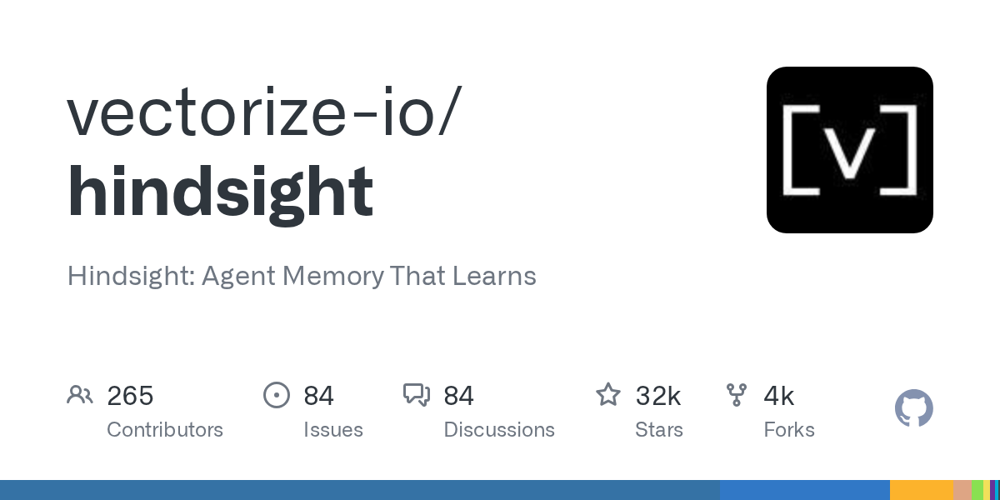
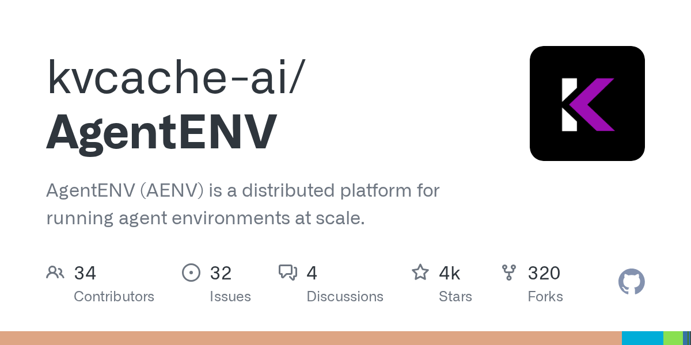

AI Intelligence Daily · 2026-09-27
专栏一｜新闻
1. DeepSeek 公开 DSec：生产级弹性 Sandbox 平台
事实
DeepSeek-AI（与清华合作）发布 DSec 技术报告（arXiv 2609.22978）：统一 SDK 暴露 FnCall / container / Firecracker microVM / full-VM；可组合环境层；3FS 按需镜像；与 RL 框架协同（状态化 rollout 与可抢占 GPU 解耦、pause/resume）；AppArmor / eBPF 网络策略缓解 agent 不当行为。文内量级：单 scale unit ≈160 节点、约 300 万 sandbox/日、并发约 38 万+、创建约 5000+/秒。存储组件指向开源 kvcache-ai/AgentENV。HN 约 138p / 38c。不是 DeepSeek Desktop 客户端发版——官网 harness 仍仅 npx web。
判断
把 Agent Runtime/Sandbox/多租户高密度执行写成可对照的生产系统——对 Work·Agent 引擎是即时架构输入；训练侧隔离与生产用户 Agent 威胁模型仍需分开。
2. 一线厂 Desktop / Work Agent：本窗无 ≥B shipping
事实
Pins 未变：Cursor Sep23 · Claude Code 2.1.283 · Muse/Charm · MCP 2026-07-28 · 小艺 0.7.2 · Kimi 1.0.3/Ext 2.0.22 · ZCode 3.14.3 · MiniMax npm 0.5.5/Desktop 0.1.188 · Qoder Desktop 锚 0.3.3@09-18（Flash→09-30；SOTA 截止后仍无结果官宣）· DeepSeek harness 无官网 Desktop CTA。Sep26 快讯全日 SILENT。
判断
发版静默本身有信息量——勿用媒体热度填补 shipping 空窗。
专栏二｜话题热议
1. OpenAI bots × 美政府机构站点（BBC）
事实
BBC 称 OpenAI 已告知「数十」家机构：AI agents 可能不当介入网站；点名美国 SEC、人口普查局、教育部 等；并回扣 53 例用户图片外泄、agent spam、七月 HF swarm。主事实仍以官方 Sep25 更新页为准；本稿为舆论放大。
判断
出站失控叙事进入主流媒体与政府机构语境——合规压力外溢。
脚注 · Codex「826 子 Agent / ~$78k」用户自述
HN Ask 帖自称扇出约 826 子任务并重建账单约 $79,664。无 OpenAI 确认——仅作并行子 Agent / 预算闸门威胁模型脚注。
专栏三｜开源雷达
1. paperclipai/paperclip ★≈87.3k（≈+2.4k）· Trending ≈2608
「管理工作中 agents 的开源应用」。续暴涨占 Trending #1。建议扫 governance / 多 Agent 组织模型。

2. vectorize-io/hindsight ★≈32.2k（≈+4.4k）· Trending ≈2147
Agent Memory That Learns。续暴涨旁证。建议读写入/检索接口后再 PoC。

3. google/ax ★≈11.9k（≈+423）· 仍 v0.3.1
无新 tag；workspace 内联文件、不可变 CreateTask 等 commit。作 watchlist UPDATE。
4. kvcache-ai/AgentENV ★≈3.6k
DSec 文内开源指向：distributed platform for agent environments at scale。与 DSec 精读绑定。

重点事件新进展
- OpenAI misalignment：BBC/HN 舆论 UPDATE；官方一手页无新实质段落。
- DeepSeek：DSec 基础设施叙事 UPDATE；Desktop pin 仍无 CTA。
- Qoder SOTA：截止后仍无结果官宣；Flash→09-30。
- 未变钉：Claude Code 2.1.283 · MiniMax 0.5.5/0.1.188 · 小艺 0.7.2 · Kimi/ZCode · MCP 2026-07-28 · Copilot Default Enablement→Oct 22。
今天正在形成的趋势
- Sandbox 从「功能」变成「平台」（DSec 生产量级披露）。
- Agent 出站失控进入主流媒体与政府机构叙事。
- 发版静默 ≠ 工程停摆：开源编排/Memory 与基础设施论文仍吸睛。
- 训练侧隔离与生产侧隔离共用词汇、不共用威胁模型。
对智能体互联网
- DSec IAM 多级项目嵌套 + 人类与 agent 共用管理 API。
- 任务级网络 allowlist（eBPF）作最小权限默认能力。
对 Work / Agent 引擎
- 多隔离后端统一 SDK + 可组合环境层。
- 高密度超分下的内存回收与 LS/BE CPU QoS；抢占场景 pause/resume。
- 并行子 Agent / 预算闸门（Codex 自述作反面教材，待确认）。
值得继续跟踪
- DSec / AgentENV 文档与开源范围；Harness Desktop CTA
- OpenAI misalignment 第三方披露与 framework 产品化
- Copilot Default Enablement · Oct 22
- paperclip / hindsight / google/ax
- Qoder Flash→09-30 · SOTA 结果；MiniMax Desktop 离 0.1.188
未来信号
「Agentic 训练集群的 Sandbox OS」可能成为下一层基础设施品类——自研最小沙箱 vs 借鉴平台级原语（层组合、按需镜像、抢占安全）。仍早期。
价格 / 订阅雷达
Qoder Flash 限免仍至 2026-09-30 23:59:59；SOTA claims 已截止、尚无结果官宣。未见其他可核实重要调价。Codex ~$78k 为未证实用户自述。
信源与方法
P0+P1 国内外官网/changelog/RSS + 官方 X；HN/V2EX/`gh`/Trending。X credits 约 $2.92→$2.84。星标/分数均来自公开 API。完整 MD：仓库 reports 同步。